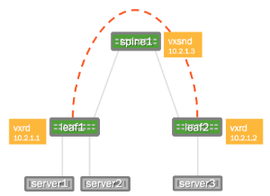
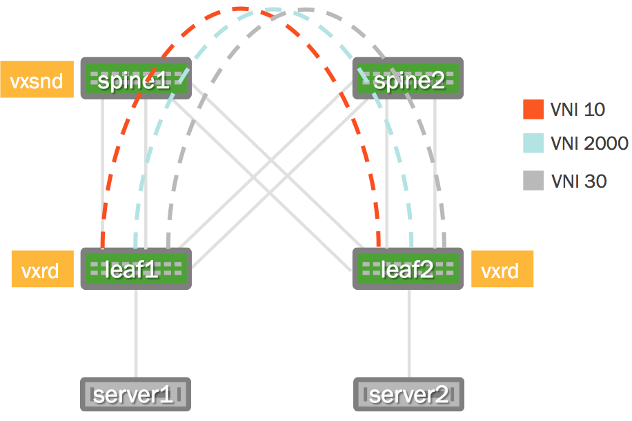

Lightweight Network Virtualization - LNV Overview
Lightweight Network Virtualization (LNV) is a technique for deploying VXLANs without a central controller on bare metal switches. This solution requires no external controller or software suite; it runs the VXLAN service and registration daemons on Cumulus Linux itself. The data path between bridge entities is established on top of a layer 3 fabric by means of a simple service node coupled with traditional MAC address learning.
To see an example of a full solution before reading the following background information, please read this chapter.
LNV is a lightweight controller option. Please contact Cumulus Networks with your scale requirements so we can make sure this is the right fit for you. There are also other controller options that can work on Cumulus Linux.
Contents
Understanding LNV Concepts
To best describe this feature, consider the following example deployment:

The two switches running Cumulus Linux, called leaf1 and leaf2, each have a bridge configured. These two bridges contain the physical switch port interfaces connecting to the servers as well as the logical VXLAN interface associated with the bridge. By creating a logical VXLAN interface on both leaf switches, the switches become VTEPs (virtual tunnel end points). The IP address associated with this VTEP is most commonly configured as its loopback address — in the image above, the loopback address is 10.2.1.1 for leaf1 and 10.2.1.2 for leaf2.
Acquiring the Forwarding Database at the Service Node
In order to connect these two VXLANs together and forward BUM (Broadcast, Unknown-unicast, Multicast) packets to members of a VXLAN, the service node needs to acquire the addresses of all the VTEPs for every VXLAN it serves. The service node daemon does this through a registration daemon running on each leaf switch that contains a VTEP participating in LNV. The registration process informs the service node of all the VXLANs to which the switch belongs.
MAC Learning and Flooding
With LNV, as with traditional bridging of physical LANs or VLANs, a bridge automatically learns the location of hosts as a side effect of receiving packets on a port.
For example, when server1 sends an L2 packet to server3, leaf2 learns that server1's MAC address is located on that particular VXLAN, and the VXLAN interface learns that the IP address of the VTEP for server1 is 10.2.1.1. So when server3 sends a packet to server1, the bridge on leaf2 forwards the packet out of the port to the VXLAN interface and the VXLAN interface sends it, encapsulated in a UDP packet, to the address 10.2.1.1.
But what if server3 sends a packet to some address that has yet to send it a packet (server2, for example)? In this case, the VXLAN interface sends the packet to the service node, which sends a copy to every other VTEP that belongs to the same VXLAN. This is called service node replication and is one of two techniques for handling BUM (Broadcast Unknown-unicast and Multicast) traffic.
Handling BUM Traffic
Cumulus Linux has two ways of handling BUM (Broadcast Unknown-unicast and Multicast) traffic:
-
Head end replication
-
Service node replication
Head end replication is enabled by default in Cumulus Linux.
You cannot have both service node and head end replication configured simultaneously, as this causes the BUM traffic to be duplicated — both the source VTEP and the service node sending their own copy of each packet to every remote VTEP.
Head End Replication
The Broadcom Tomahawk, Trident II+ and Trident II chipsets and Mellanox Spectrum chipsets are capable of head end replication (HER) — the ability to generate all the BUM traffic in hardware. The most scalable solution available with LNV is to have each VTEP (top of rack switch) generate all of its own BUM traffic rather than relying on an external service node. HER is enabled by default in Cumulus Linux.
Cumulus Linux verified support for up to 128 VTEPs with head end replication.
To disable head end replication, edit /etc/vxrd.conf and set head_rep to False.
Service Node Replication
Cumulus Linux also supports service node replication for VXLAN BUM packets. This is useful with LNV if you have more than 128 VTEPs. However, it is not recommended because it forces the spine switches running the vxsnd (service node daemon) to replicate the packets in software instead of in hardware, unlike head end replication. If you're not using a controller but have more than 128 VTEPs, contact Cumulus Networks.
To enable service node replication:
-
Disable head end replication; set head_rep to False in /etc/vxrd.conf.
-
Configure a service node IP address for every VXLAN interface using the vxlan-svcnodeip parameter:
cumulus@switch:~$ net add vxlan VXLAN vxlan svcnodeip IP_ADDRESSYou only specify this parameter when head end replication is disabled. For the loopback, the parameter is still named vxrd-svcnode-ip.
-
Edit /etc/vxsnd.conf, and configure the following:
-
Set the same service node IP address that you did in the previous step:
svcnode_ip = <> -
To forward VXLAN data traffic, set the following variable to True:
enable_vxlan_listen =true
-
Requirements
Hardware Requirements
-
Switches with a Broadcom Tomahawk, Trident II+ or Trident II, or Mellanox Spectrum chipset running Cumulus Linux 2.5.4 or later. Please refer to the Cumulus Networks hardware compatibility list for a list of supported switch models.
Configuration Requirements
-
The VXLAN has an associated VXLAN Network Identifier (VNI), also interchangeably called a VXLAN ID.
-
The VNI should not be 0 or 16777215, as these two numbers are reserved values under Cumulus Linux.
-
The VXLAN link and physical interfaces are added to the bridge to create the association between the port, VLAN and VXLAN instance.
-
Each bridge on the switch has only one VXLAN interface. Cumulus Linux does not support more than one VXLAN link in a bridge; however, a switch can have multiple bridges.
-
An SVI (Switch VLAN Interface) or L3 address on the bridge is not supported. For example, you can't ping from the leaf1 SVI to the leaf2 SVI via the VXLAN tunnel; you would need to use server1 and server2 to verify.
Installing the LNV Packages
vxfld is installed by default on all new installations of Cumulus Linux 3.x. If you are upgrading from an earlier version, run sudo apt-get install python-vxfld to install the LNV package.
Sample LNV Configuration
The following images illustrate the configuration that is referenced throughout this chapter.
|
Physical Cabling Diagram |
Network Virtualization Diagram  |

Want to try out configuring LNV and don't have a Cumulus Linux switch? Check out Cumulus VX.
Network Connectivity
There must be full network connectivity before you can configure LNV. The layer 3 IP addressing information as well as the OSPF configuration (/etc/quagga/Quagga.conf) below is provided to make the LNV example easier to understand.
OSPF is not a requirement for LNV, LNV just requires L3 connectivity. With Cumulus Linux this can be achieved with static routes, OSPF or BGP.
Layer 3 IP Addressing
Here is the configuration for the IP addressing information used in this example.
|
spine1: cumulus@spine1:~$ net add interface swp49 ip address 10.1.1.2/30cumulus@spine1:~$ net add interface swp50 ip address 10.1.1.6/30cumulus@spine1:~$ net add interface swp51 ip address 10.1.1.50/30cumulus@spine1:~$ net add interface swp52 ip address 10.1.1.54/30cumulus@spine1:~$ net add loopback lo ip address 10.2.1.3/32cumulus@spine1:~$ net pendingcumulus@spine1:~$ net commitThese commands create the following configuration: cumulus@spine1:~$ cat /etc/network/interfacesauto loiface lo inet loopback address 10.2.1.3/32 auto eth0iface eth0 inet dhcpauto swp49iface swp49 address 10.1.1.2/30 auto swp50iface swp50 address 10.1.1.6/30 auto swp51iface swp51 address 10.1.1.50/30 auto swp52iface swp52 address 10.1.1.54/30 |
spine2: cumulus@spine2:~$ net add interface swp49 ip address 10.1.1.18/30cumulus@spine2:~$ net add interface swp50 ip address 10.1.1.22/30cumulus@spine2:~$ net add interface swp51 ip address 10.1.1.34/30cumulus@spine2:~$ net add interface swp52 ip address 10.1.1.38/30cumulus@spine2:~$ net add loopback lo ip address 10.2.1.4/32cumulus@spine2:~$ net pendingcumulus@spine2:~$ net commitThese commands create the following configuration: cumulus@spine2:~$ cat /etc/network/interfacesauto loiface lo inet loopback address 10.2.1.4/32 auto eth0iface eth0 inet dhcpauto swp49iface swp49 address 10.1.1.18/30 auto swp50iface swp50 address 10.1.1.22/30 auto swp51iface swp51 address 10.1.1.34/30 auto swp52iface swp52 address 10.1.1.38/30 |
|
leaf1: cumulus@leaf1:~$ net add interface swp1 breakout 4x cumulus@leaf1:~$ net add interface swp1s0 ip address 10.1.1.1/30cumulus@leaf1:~$ net add interface swp1s1 ip address 10.1.1.5/30cumulus@leaf1:~$ net add interface swp1s2 ip address 10.1.1.33/30cumulus@leaf1:~$ net add interface swp1s3 ip address 10.1.1.37/30cumulus@leaf1:~$ net add loopback lo ip address 10.2.1.1/32cumulus@leaf1:~$ net pendingcumulus@leaf1:~$ net commitThese commands create the following configuration: cumulus@leaf1:~$ cat /etc/network/interfacesauto loiface lo inet loopback address 10.2.1.1/32 auto eth0iface eth0 inet dhcp auto swp1s0iface swp1s0 address 10.1.1.1/30auto swp1s1iface swp1s1 address 10.1.1.5/30auto swp1s2iface swp1s2 address 10.1.1.33/30auto swp1s3iface swp1s3 address 10.1.1.37/30 |
leaf2: cumulus@leaf2:~$ net add interface swp1 breakout 4x cumulus@leaf2:~$ net add interface swp1s0 ip address 10.1.1.17/30cumulus@leaf2:~$ net add interface swp1s1 ip address 10.1.1.21/30cumulus@leaf2:~$ net add interface swp1s2 ip address 10.1.1.49/30cumulus@leaf2:~$ net add interface swp1s3 ip address 10.1.1.53/30cumulus@leaf2:~$ net add loopback lo ip address 10.2.1.2/32cumulus@leaf2:~$ net pendingcumulus@leaf2:~$ net commit These commands create the following configuration: cumulus@leaf2:~$ cat /etc/network/interfacesauto loiface lo inet loopback address 10.2.1.2/32 auto eth0iface eth0 inet dhcp auto swp1s0iface swp1s0 address 10.1.1.17/30 auto swp1s1iface swp1s1 address 10.1.1.21/30 auto swp1s2iface swp1s2 address 10.1.1.49/30 auto swp1s3iface swp1s3 address 10.1.1.53/30 |
Layer 3 Fabric
The service nodes and registration nodes must all be routable between each other. The L3 fabric on Cumulus Linux can either be BGP or OSPF. In this example, OSPF is used to demonstrate full reachability. Click to expand the Quagga configurations below.
Quagga configuration using OSPF:
|
spine1: cumulus@spine1:~$ net add ospf network 10.2.1.3/32 area 0.0.0.0cumulus@spine1:~$ net add interface swp49 ospf network point-to-pointcumulus@spine1:~$ net add interface swp50 ospf network point-to-pointcumulus@spine1:~$ net add interface swp51 ospf network point-to-pointcumulus@spine1:~$ net add interface swp52 ospf network point-to-pointcumulus@spine1:~$ net add interface swp49 ospf area 0.0.0.0cumulus@spine1:~$ net add interface swp50 ospf area 0.0.0.0cumulus@spine1:~$ net add interface swp51 ospf area 0.0.0.0cumulus@spine1:~$ net add interface swp52 ospf area 0.0.0.0cumulus@spine1:~$ net add ospf router-id 10.2.1.3cumulus@spine1:~$ net pendingcumulus@spine1:~$ net commitThese commands create the following configuration: interface swp49 ip ospf network point-to-point ip ospf area 0.0.0.0!interface swp50 ip ospf network point-to-point ip ospf area 0.0.0.0!interface swp51 ip ospf network point-to-point ip ospf area 0.0.0.0!interface swp52 ip ospf network point-to-point ip ospf area 0.0.0.0!router ospf ospf router-id 10.2.1.3 network 10.2.1.3/32 area 0.0.0.0 |
spine2: cumulus@spine2:~$ net add ospf network 10.2.1.4/32 area 0.0.0.0cumulus@spine2:~$ net add interface swp49 ospf network point-to-pointcumulus@spine2:~$ net add interface swp50 ospf network point-to-pointcumulus@spine2:~$ net add interface swp51 ospf network point-to-pointcumulus@spine2:~$ net add interface swp52 ospf network point-to-pointcumulus@spine2:~$ net add interface swp49 ospf area 0.0.0.0cumulus@spine2:~$ net add interface swp50 ospf area 0.0.0.0cumulus@spine2:~$ net add interface swp51 ospf area 0.0.0.0cumulus@spine2:~$ net add interface swp52 ospf area 0.0.0.0cumulus@spine2:~$ net add ospf router-id 10.2.1.4cumulus@spine2:~$ net pendingcumulus@spine2:~$ net commitThese commands create the following configuration: interface swp49 ip ospf network point-to-point ip ospf area 0.0.0.0!interface swp50 ip ospf network point-to-point ip ospf area 0.0.0.0!interface swp51 ip ospf network point-to-point ip ospf area 0.0.0.0!interface swp52 ip ospf network point-to-point ip ospf area 0.0.0.0!router ospf ospf router-id 10.2.1.4 network 10.2.1.4/32 area 0.0.0.0 |
|
leaf1: cumulus@leaf1:~$ net add ospf network 10.2.1.1/32 area 0.0.0.0cumulus@leaf1:~$ net add interface swp1s0 ospf network point-to-pointcumulus@leaf1:~$ net add interface swp1s1 ospf network point-to-pointcumulus@leaf1:~$ net add interface swp1s2 ospf network point-to-pointcumulus@leaf1:~$ net add interface swp1s3 ospf network point-to-pointcumulus@leaf1:~$ net add interface swp1s0 ospf area 0.0.0.0cumulus@leaf1:~$ net add interface swp1s1 ospf area 0.0.0.0cumulus@leaf1:~$ net add interface swp1s2 ospf area 0.0.0.0cumulus@leaf1:~$ net add interface swp1s3 ospf area 0.0.0.0cumulus@leaf1:~$ net add ospf router-id 10.2.1.1cumulus@leaf1:~$ net pendingcumulus@leaf1:~$ net commitThese commands create the following configuration: interface swp1s0 ip ospf network point-to-point ip ospf area 0.0.0.0!interface swp1s1 ip ospf network point-to-point ip ospf area 0.0.0.0!interface swp1s2 ip ospf network point-to-point ip ospf area 0.0.0.0!interface swp1s3 ip ospf network point-to-point ip ospf area 0.0.0.0!router ospf ospf router-id 10.2.1.1 network 10.2.1.1/32 area 0.0.0.0 |
leaf2: cumulus@leaf2:~$ net add ospf network 10.2.1.2/32 area 0.0.0.0cumulus@leaf2:~$ net add interface swp1s0 ospf network point-to-pointcumulus@leaf2:~$ net add interface swp1s1 ospf network point-to-pointcumulus@leaf2:~$ net add interface swp1s2 ospf network point-to-pointcumulus@leaf2:~$ net add interface swp1s3 ospf network point-to-pointcumulus@leaf2:~$ net add interface swp1s0 ospf area 0.0.0.0cumulus@leaf2:~$ net add interface swp1s1 ospf area 0.0.0.0cumulus@leaf2:~$ net add interface swp1s2 ospf area 0.0.0.0cumulus@leaf2:~$ net add interface swp1s3 ospf area 0.0.0.0cumulus@leaf2:~$ net add ospf router-id 10.2.1.2cumulus@leaf2:~$ net pendingcumulus@leaf2:~$ net commitThese commands create the following configuration: interface swp1s0 ip ospf network point-to-point ip ospf area 0.0.0.0!interface swp1s1 ip ospf network point-to-point ip ospf area 0.0.0.0!interface swp1s2 ip ospf network point-to-point ip ospf area 0.0.0.0!interface swp1s3 ip ospf network point-to-point ip ospf area 0.0.0.0!router ospf ospf router-id 10.2.1.2 network 10.2.1.2/32 area 0.0.0.0 |
Host Configuration
In this example, the servers are running Ubuntu 14.04. There needs to be a trunk mapped from server1 and server2 to the respective switch. In Ubuntu this is done with subinterfaces. You can expand the configurations below.
|
server1: auto eth3.10iface eth3.10 inet static address 10.10.10.1/24auto eth3.20iface eth3.20 inet static address 10.10.20.1/24auto eth3.30iface eth3.30 inet static address 10.10.30.1/24 |
server2: auto eth3.10iface eth3.10 inet static address 10.10.10.2/24auto eth3.20iface eth3.20 inet static address 10.10.20.2/24auto eth3.30iface eth3.30 inet static address 10.10.30.2/24 |
On Ubuntu it is more reliable to use ifup and if down to bring the interfaces up and down individually, rather than restarting networking entirely (that is, there is no equivalent to if reload like there is in Cumulus Linux):
cumulus@server1:~$ sudo ifup eth3.10Set name-type for VLAN subsystem. Should be visible in /proc/net/vlan/configAdded VLAN with VID == 10 to IF -:eth3:-cumulus@server1:~$ sudo ifup eth3.20Set name-type for VLAN subsystem. Should be visible in /proc/net/vlan/configAdded VLAN with VID == 20 to IF -:eth3:-cumulus@server1:~$ sudo ifup eth3.30Set name-type for VLAN subsystem. Should be visible in /proc/net/vlan/configAdded VLAN with VID == 30 to IF -:eth3:-Configuring the VLAN to VXLAN Mapping
Configure the VLANs and associated VXLANs. In this example, there are 3 VLANs and 3 VXLAN IDs (VNIs). VLANs 10, 20 and 30 are used and associated with VNIs 10, 2000 and 30 respectively. The loopback address, used as the vxlan-local-tunnelip, is the only difference between leaf1 and leaf2 for this demonstration.
|
leaf1: cumulus@leaf1:~$ net add loopback lo ip address 10.2.1.1/32cumulus@leaf1:~$ net add loopback lo vxrd-src-ip 10.2.1.1cumulus@leaf1:~$ net add loopback lo vxrd-svcnode-ip 10.2.1.3cumulus@leaf1:~$ net add vxlan vni-10 vxlan id 10cumulus@leaf1:~$ net add vxlan vni-10 vxlan local-tunnelip 10.2.1.1cumulus@leaf1:~$ net add vxlan vni-10 bridge access 10cumulus@leaf1:~$ net add vxlan vni-2000 vxlan id 2000cumulus@leaf1:~$ net add vxlan vni-2000 vxlan local-tunnelip 10.2.1.1cumulus@leaf1:~$ net add vxlan vni-2000 bridge access 20cumulus@leaf1:~$ net add vxlan vni-30 vxlan id 30cumulus@leaf1:~$ net add vxlan vni-30 vxlan local-tunnelip 10.2.1.1cumulus@leaf1:~$ net add vxlan vni-30 bridge access 30cumulus@leaf1:~$ net pending cumulus@leaf1:~$ net commitThese commands create the following configuration in the /etc/network/interfaces file: auto loiface lo address 10.2.1.1/32 vxrd-src-ip 10.2.1.1 auto bridgeiface bridge bridge-ports vni-10 vni-2000 vni-30 bridge-vids 10 20 30 bridge-vlan-aware yes auto vni-10iface vni-10 bridge-access 10 mstpctl-bpduguard yes mstpctl-portbpdufilter yes vxlan-id 10 vxlan-local-tunnelip 10.2.1.1auto vni-2000iface vni-2000 bridge-access 20 mstpctl-bpduguard yes mstpctl-portbpdufilter yes vxlan-id 2000 vxlan-local-tunnelip 10.2.1.1auto vni-30iface vni-30 bridge-access 30 mstpctl-bpduguard yes mstpctl-portbpdufilter yes vxlan-id 30 vxlan-local-tunnelip 10.2.1.1 |
leaf2: cumulus@leaf2:~$ net add loopback lo ip address 10.2.1.2/32cumulus@leaf2:~$ net add loopback lo vxrd-src-ip 10.2.1.2cumulus@leaf2:~$ net add loopback lo vxrd-svcnode-ip 10.2.1.3cumulus@leaf2:~$ net add vxlan vni-10 vxlan id 10cumulus@leaf2:~$ net add vxlan vni-10 vxlan local-tunnelip 10.2.1.2cumulus@leaf2:~$ net add vxlan vni-10 bridge access 10cumulus@leaf2:~$ net add vxlan vni-2000 vxlan id 2000cumulus@leaf2:~$ net add vxlan vni-2000 vxlan local-tunnelip 10.2.1.2cumulus@leaf2:~$ net add vxlan vni-2000 bridge access 20cumulus@leaf2:~$ net add vxlan vni-30 vxlan id 30cumulus@leaf2:~$ net add vxlan vni-30 vxlan local-tunnelip 10.2.1.2cumulus@leaf2:~$ net add vxlan vni-30 bridge access 30cumulus@leaf2:~$ net pending cumulus@leaf2:~$ net commitThese commands create the following configuration in the /etc/network/interfaces file: auto loiface lo address 10.2.1.2/32 vxrd-src-ip 10.2.1.2 auto bridgeiface bridge bridge-ports vni-10 vni-2000 vni-30 bridge-vids 10 20 30 bridge-vlan-aware yesauto vni-10iface vni-10 bridge-access 10 mstpctl-bpduguard yes mstpctl-portbpdufilter yes vxlan-id 10 vxlan-local-tunnelip 10.2.1.2auto vni-2000iface vni-2000 bridge-access 20 mstpctl-bpduguard yes mstpctl-portbpdufilter yes vxlan-id 2000 vxlan-local-tunnelip 10.2.1.2 auto vni-30iface vni-30 bridge-access 30 mstpctl-bpduguard yes mstpctl-portbpdufilter yes vxlan-id 30 vxlan-local-tunnelip 10.2.1.2 |
Why is vni-2000 not vni-20? For example, why not tie VLAN 20 to VNI 20, or why was 2000 used? VXLANs and VLANs do not need to be the same number. This was done on purpose to highlight this fact. However if you are using fewer than 4096 VLANs, there is no reason not to make it easy and correlate VLANs to VXLANs. It is completely up to you.
Verifying the VLAN to VXLAN Mapping
Use the brctl show command to see the physical and logical interfaces associated with that bridge:
cumulus@leaf1:~$ brctl showbridge name bridge id STP enabled interfacesbridge 8000.443839008404 no swp32s0.10 vni-10bridge 8000.443839008404 no swp32s0.20 vni-2000bridge 8000.443839008404 no swp32s0.30 vni-30As with any logical interfaces on Linux, the name does not matter (other than a 15-character limit). To verify the associated VNI for the logical name, use the ip -d link show command:
cumulus@leaf1:~$ ip -d link show vni-1043: vni-10: <BROADCAST,MULTICAST,UP,LOWER_UP> mtu 1500 qdisc noqueue master br-10 state UNKNOWN mode DEFAULT link/ether 02:ec:ec:bd:7f:c6 brd ff:ff:ff:ff:ff:ff vxlan id 10 srcport 32768 61000 dstport 4789 ageing 300 bridge_slaveThe vxlan id 10 indicates the VXLAN ID/VNI is indeed 10 as the logical name suggests.
Enabling and Managing Service Node and Registration Daemons
Every VTEP must run the registration daemon (vxrd). Typically, every leaf switch acts as a VTEP. A minimum of 1 switch (a switch not already acting as a VTEP) must run the service node daemon (vxsnd). The instructions for enabling these daemons follows.
Enabling the Service Node Daemon
The service node daemon (vxsnd) is included in the Cumulus Linux repository as vxfld-vxsnd. The service node daemon can run on any switch running Cumulus Linux as long as that switch is not also a VXLAN VTEP. In this example, enable the service node only on the spine1 switch, then restart the service.
cumulus@spine1:~$ sudo systemctl enable vxsnd.servicecumulus@spine1:~$ sudo systemctl restart vxsnd.serviceDo not run vxsnd on a switch that is already acting as a VTEP.
Enabling the Registration Daemon
The registration daemon (vxrd) is included in the Cumulus Linux package as vxfld-vxrd. The registration daemon must run on each VTEP participating in LNV, so you must enable it on every TOR (leaf) switch acting as a VTEP, then restart the vxrd daemon. For example, on leaf1:
cumulus@leaf1:~$ sudo systemctl enable vxrd.servicecumulus@leaf1:~$ sudo systemctl restart vxrd.serviceThen enable and restart the vxrd daemon on leaf2:
cumulus@leaf2:~$ sudo systemctl enable vxrd.servicecumulus@leaf2:~$ sudo systemctl restart vxrd.serviceChecking the Daemon Status
To determine if the daemon is running, use the systemctl status <daemon name>.service command.
For the service node daemon:
cumulus@spine1:~$ sudo systemctl status vxsnd.service● vxsnd.service - Lightweight Network Virt Discovery Svc and Replicator Loaded: loaded (/lib/systemd/system/vxsnd.service; enabled) Active: active (running) since Wed 2016-05-11 11:42:55 UTC; 10min ago Main PID: 774 (vxsnd) CGroup: /system.slice/vxsnd.service └─774 /usr/bin/python /usr/bin/vxsndMay 11 11:42:55 cumulus vxsnd[774]: INFO: Starting (pid 774) ...For the registration daemon:
cumulus@leaf1:~$ sudo systemctl status vxrd.service ● vxrd.service - Lightweight Network Virtualization Peer Discovery Daemon Loaded: loaded (/lib/systemd/system/vxrd.service; enabled) Active: active (running) since Wed 2016-05-11 11:42:55 UTC; 10min ago Main PID: 929 (vxrd) CGroup: /system.slice/vxrd.service └─929 /usr/bin/python /usr/bin/vxrdMay 11 11:42:55 cumulus vxrd[929]: INFO: Starting (pid 929) ...Configuring the Registration Node
The registration node was configured earlier in /etc/network/interfaces in the VXLAN mapping section above; no additional configuration is typically needed. However, if you need to modify the registration node configuration, edit /etc/vxrd.conf.
cumulus@leaf1:~$ sudo nano /etc/vxrd.confThen edit the svcnode_ip variable:
svcnode_ip = 10.2.1.3Then perform the same on leaf2:
cumulus@leaf2:~$ sudo nano /etc/vxrd.confAnd again edit the svcnode_ip variable:
svcnode_ip = 10.2.1.3Enable, then restart the registration node daemon for the change to take effect:
cumulus@leaf1:~$ sudo systemctl enable vxrd.servicecumulus@leaf1:~$ sudo systemctl restart vxrd.serviceRestart the daemon on leaf2:
cumulus@leaf2:~$ sudo systemctl enable vxrd.servicecumulus@leaf2:~$ sudo systemctl restart vxrd.serviceThe complete list of options you can configure is listed below:
|
Name |
Description |
Default |
|
loglevel |
The log level, which can be DEBUG, INFO, WARNING, ERROR, CRITICAL. |
INFO |
|
logdest |
The destination for log messages. It can be a file name, stdout or syslog. |
syslog |
|
logfilesize |
Log file size in bytes. Used when logdest is a file name. |
512000 |
|
logbackupcount |
Maximum number of log files stored on the disk. Used when logdest is a file name. |
14 |
|
pidfile |
The PIF file location for the vxrd daemon. |
/var/run/vxrd.pid |
|
udsfile |
The file name for the Unix domain socket used for management. |
/var/run/vxrd.sock |
|
vxfld_port |
The UDP port used for VXLAN control messages. |
10001 |
|
svcnode_ip |
The address to which registration daemons send control messages for registration and/or BUM packets for replication. This can also be configured under /etc/network/interfaces with the vxrd-svcnode-ip keyword. |
|
|
holdtime |
Hold time (in seconds) for soft state, which is how long the service node waits before ageing out an IP address for a VNI. The vxrd includes this in the register messages it sends to a vxsnd. |
90 seconds |
|
src_ip |
Local IP address to bind to for receiving control traffic from the service node daemon. |
|
|
refresh_rate |
Number of times to refresh within the hold time. The higher this number, the more lost UDP refresh messages can be tolerated. |
3 seconds |
|
config_check_rate |
The number of seconds to poll the system for current VXLAN membership. |
5 seconds |
|
head_rep |
Enables self replication. Instead of using the service node to replicate BUM packets, it will be done in hardware on the VTEP switch. |
true |
Use 1, yes, true or on for True for each relevant option. Use 0, no, false or off for False.
Configuring the Service Node
To configure the service node daemon, edit the /etc/vxsnd.conf configuration file.
For the example configuration, default values are used, except for the svcnode_ip field.
cumulus@spine1:~$ sudo nano /etc/vxsnd.confThe address field is set to the loopback address of the switch running the vxsnd daemon.
svcnode_ip = 10.2.1.3Enable, then restart the service node daemon for the change to take effect:
cumulus@spine1:~$ sudo systemctl enable vxsnd.servicecumulus@spine1:~$ sudo systemctl restart vxsnd.serviceThe complete list of options you can configure is listed below:
|
Name |
Description |
Default |
|
loglevel |
The log level, which can be DEBUG, INFO, WARNING, ERROR, CRITICAL. |
INFO |
|
logdest |
Destination for log messages. It can be a file name, stdout or syslog. |
syslog |
|
logfilesize |
The log file size in bytes. Used when logdest is a file name. |
512000 |
|
logbackupcount |
Maximum number of log files stored on disk. Used when logdest is a file name. |
14 |
|
pidfile |
The PID file location for the vxrd daemon. |
/var/run/vxrd.pid |
|
udsfile |
The file name for the Unix domain socket used for management. |
/var/run/vxrd.sock |
|
vxfld_port |
The UDP port used for VXLAN control messages. |
10001 |
|
svcnode_ip |
This is the address to which registration daemons send control messages for registration and/or BUM packets for replication. |
0.0.0.0 |
|
holdtime |
Holdtime (in seconds) for soft state. It is used when sending a register message to peers in response to learning a <vni, addr> from a VXLAN data packet. |
90 |
|
src_ip |
Local IP address to bind to for receiving inter-vxsnd control traffic. |
0.0.0.0 |
|
svcnode_peers |
Space-separated list of IP addresses with which the vxsnd shares its state. |
|
|
enable_vxlan_listen |
When set to true, the service node listens for VXLAN data traffic. |
true |
|
install_svcnode_ip |
When set to true, the snd_peer_address gets installed on the loopback interface. It gets withdrawn when the vxsnd is not in service. If set to true, you must define the snd_peer_address configuration variable. |
false |
|
age_check |
Number of seconds to wait before checking the database to age out stale entries. |
90 seconds |
Use 1, yes, true or on for True for each relevant option. Use 0, no, false or off for False.
Verification and Troubleshooting
Verifying the Registration Node Daemon
Use the vxrdctl vxlans command to see the configured VNIs, the local address being used to source the VXLAN tunnel and the service node being used.
cumulus@leaf1:~$ vxrdctl vxlansVNI Local Addr Svc Node=== ========== ======== 10 10.2.1.1 10.2.1.3 30 10.2.1.1 10.2.1.32000 10.2.1.1 10.2.1.3 |
cumulus@leaf2:~$ vxrdctl vxlansVNI Local Addr Svc Node=== ========== ======== 10 10.2.1.2 10.2.1.3 30 10.2.1.2 10.2.1.32000 10.2.1.2 10.2.1.3 |
Use the vxrdctl peers command to see configured VNIs and all VTEPs (leaf switches) within the network that have them configured.
cumulus@leaf1:~$ vxrdctl peersVNI Peer Addrs=== ==========10 10.2.1.1, 10.2.1.230 10.2.1.1, 10.2.1.22000 10.2.1.1, 10.2.1.2 |
cumulus@leaf2:~$ vxrdctl peersVNI Peer Addrs=== ==========10 10.2.1.1, 10.2.1.230 10.2.1.1, 10.2.1.22000 10.2.1.1, 10.2.1.2 |
When head end replication mode is disabled, the command won't work.
Use the vxrdctl peers command to see the other VTEPs (leaf switches) and what VNIs are associated with them. This does not show anything unless you enabled head end replication mode by setting the head_rep option to True. Otherwise, replication is done by the service node.
cumulus@leaf2:~$ vxrdctl peersHead-end replication is turned off on this device.This command will not provide any outputVerifying the Service Node Daemon
Use the vxsndctl fdb command to verify which VNIs belong to which VTEP (leaf switches).
cumulus@spine1:~$ vxsndctl fdbVNI Address Ageout=== ======= ====== 10 10.2.1.1 82 10 10.2.1.2 77 30 10.2.1.1 82 30 10.2.1.2 772000 10.2.1.1 822000 10.2.1.2 77Verifying Traffic Flow and Checking Counters
VXLAN transit traffic information is stored in a flat file located at /cumulus/switchd/run/stats/vxlan/all.
cumulus@leaf1:~$ cat /cumulus/switchd/run/stats/vxlan/allVNI : 10Network In Octets : 1090Network In Packets : 8Network Out Octets : 1798Network Out Packets : 13Total In Octets : 2818Total In Packets : 27Total Out Octets : 3144Total Out Packets : 39VN Interface : vni: 10, swp32s0.10Total In Octets : 1728Total In Packets : 19Total Out Octets : 552Total Out Packets : 18VNI : 30Network In Octets : 828Network In Packets : 6Network Out Octets : 1224Network Out Packets : 9Total In Octets : 2374Total In Packets : 23Total Out Octets : 2300Total Out Packets : 32VN Interface : vni: 30, swp32s0.30Total In Octets : 1546Total In Packets : 17Total Out Octets : 552Total Out Packets : 17VNI : 2000Network In Octets : 676Network In Packets : 5Network Out Octets : 1072Network Out Packets : 8Total In Octets : 2030Total In Packets : 20Total Out Octets : 2042Total Out Packets : 30VN Interface : vni: 2000, swp32s0.20Total In Octets : 1354Total In Packets : 15Total Out Octets : 446Pinging to Test Connectivity
To test the connectivity across the VXLAN tunnel with an ICMP echo request (ping), make sure to ping from the server rather than the switch itself.
As mentioned above, SVIs (switch VLAN interfaces) are not supported when using VXLAN. That is, there cannot be an IP address on the bridge that also contains a VXLAN.
Following is the IP address information used in this example configuration.
|
VNI |
server1 |
server2 |
|
10 |
10.10.10.1 |
10.10.10.2 |
|
2000 |
10.10.20.1 |
10.10.20.2 |
|
30 |
10.10.30.1 |
10.10.30.2 |
To test connectivity between VNI 10 connected servers by pinging from server1:
cumulus@server1:~$ ping 10.10.10.2PING 10.10.10.2 (10.10.10.2) 56(84) bytes of data.64 bytes from 10.10.10.2: icmp_seq=1 ttl=64 time=3.90 ms64 bytes from 10.10.10.2: icmp_seq=2 ttl=64 time=0.202 ms64 bytes from 10.10.10.2: icmp_seq=3 ttl=64 time=0.195 ms^C--- 10.10.10.2 ping statistics ---3 packets transmitted, 3 received, 0% packet loss, time 2002msrtt min/avg/max/mdev = 0.195/1.432/3.900/1.745 mscumulus@server1:~$The other VNIs were also tested and can be viewed in the expanded output below.
Test connectivity between VNI-2000 connected servers by pinging from server1:
cumulus@server1:~$ ping 10.10.20.2PING 10.10.20.2 (10.10.20.2) 56(84) bytes of data.64 bytes from 10.10.20.2: icmp_seq=1 ttl=64 time=1.81 ms64 bytes from 10.10.20.2: icmp_seq=2 ttl=64 time=0.194 ms64 bytes from 10.10.20.2: icmp_seq=3 ttl=64 time=0.206 ms^C--- 10.10.20.2 ping statistics ---3 packets transmitted, 3 received, 0% packet loss, time 2000msrtt min/avg/max/mdev = 0.194/0.739/1.819/0.763 msTest connectivity between VNI-30 connected servers by pinging from server1:
cumulus@server1:~$ ping 10.10.30.2PING 10.10.30.2 (10.10.30.2) 56(84) bytes of data.64 bytes from 10.10.30.2: icmp_seq=1 ttl=64 time=1.85 ms64 bytes from 10.10.30.2: icmp_seq=2 ttl=64 time=0.239 ms64 bytes from 10.10.30.2: icmp_seq=3 ttl=64 time=0.185 ms64 bytes from 10.10.30.2: icmp_seq=4 ttl=64 time=0.212 ms^C--- 10.10.30.2 ping statistics ---4 packets transmitted, 4 received, 0% packet loss, time 3000msrtt min/avg/max/mdev = 0.185/0.622/1.853/0.711 msTroubleshooting with MAC Addresses
Since there is no SVI, there is no way to ping from the server to the directly attached leaf (top of rack) switch without cabling the switch to itself. The easiest way to see if the server can reach the leaf switch is to check the MAC address table of the leaf switch.
First, get the MAC address of the server:
cumulus@server1:~$ ip addr show eth3.10 | grep ether link/ether 90:e2:ba:55:f0:85 brd ff:ff:ff:ff:ff:ffNext, check the MAC address table of the leaf switch:
cumulus@leaf1:~$ brctl showmacs br-10port name mac addr vlan is local? ageing timervni-10 46:c6:57:fc:1f:54 0 yes 0.00swp32s0.10 90:e2:ba:55:f0:85 0 no 75.87vni-10 90:e2:ba:7e:a9:c1 0 no 75.87swp32s0.10 ec:f4:bb:fc:67:a1 0 yes 0.0090:e2:ba:55:f0:85 appears in the MAC address table, which indicates that connectivity is occurring between leaf1 and server1.
Checking the Service Node Configuration
Use ip -d link show to verify the service node, VNI and administrative state of a particular logical VNI interface:
cumulus@leaf1:~$ ip -d link show vni-1035: vni-10: <BROADCAST,MULTICAST,UP,LOWER_UP> mtu 1500 qdisc noqueue master br-10 state UNKNOWN mode DEFAULT link/ether 46:c6:57:fc:1f:54 brd ff:ff:ff:ff:ff:ff vxlan id 10 remote 10.2.1.3 local 10.2.1.1 srcport 32768 61000 dstport 4789 ageing 300 svcnode 10.2.1.3 bridge_slaveAdvanced LNV Usage
Scaling LNV by Load Balancing with Anycast
The above configuration assumes a single service node. A single service node can quickly be overwhelmed by BUM traffic. To load balance BUM traffic across multiple service nodes, use Anycast. Anycast enables BUM traffic to reach the topologically nearest service node rather than overwhelming a single service node.
Enabling the Service Node Daemon on Additional Spine Switches
In this example, spine1 already has the service node daemon enabled. Enable it on the spine2 switch, then restart the vxsnd daemon:
cumulus@spine2:~$ sudo systemctl enable vxsnd.servicecumulus@spine2:~$ sudo systemctl restart vxsnd.serviceConfiguring the Anycast Address on All Participating Service Nodes
|
spine1: Add the 10.10.10.10/32 address to the loopback address: cumulus@spine1:~$ net add loopback lo ip address 10.10.10.10/32cumulus@spine1:~$ net pendingcumulus@spine1:~$ net commitThese commands create the following configuration in the /etc/network/interfaces file: auto loiface lo inet loopback address 10.2.1.3/32 address 10.10.10.10/32Verify the IP address is configured: cumulus@spine1:~$ ip addr show lo1: lo: <LOOPBACK,UP,LOWER_UP> mtu 16436 qdisc noqueue state UNKNOWN link/loopback 00:00:00:00:00:00 brd 00:00:00:00:00:00 inet 127.0.0.1/8 scope host lo inet 10.2.1.3/32 scope global lo inet 10.10.10.10/32 scope global lo inet6 ::1/128 scope host valid_lft forever preferred_lft forever |
spine2: Add the 10.10.10.10/32 address to the loopback address: cumulus@spine2:~$ net add loopback lo ip address 10.10.10.10/32cumulus@spine2:~$ net pendingcumulus@spine2:~$ net commitThese commands create the following configuration in the /etc/network/interfaces file: auto loiface lo inet loopback address 10.2.1.4/32 address 10.10.10.10/32
Verify the IP address is configured: cumulus@spine2:~$ ip addr show lo1: lo: <LOOPBACK,UP,LOWER_UP> mtu 16436 qdisc noqueue state UNKNOWN link/loopback 00:00:00:00:00:00 brd 00:00:00:00:00:00 inet 127.0.0.1/8 scope host lo inet 10.2.1.4/32 scope global lo inet 10.10.10.10/32 scope global lo inet6 ::1/128 scope host valid_lft forever preferred_lft forever |
Configuring the Service Node vxsnd.conf File
|
spine1: Use a text editor to edit the network configuration: cumulus@spine1:~$ sudo nano /etc/vxsnd.confChange the following values: svcnode_ip = 10.10.10.10 svcnode_peers = 10.2.1.4 src_ip = 10.2.1.3This sets the address on which the service node listens to VXLAN messages to the configured Anycast address and sets it to sync with spine2. Enable, then restart the vxsnd daemon: cumulus@spine1:~$ sudo systemctl enable vxsnd.servicecumulus@spine1:~$ sudo systemctl restart vxsnd.service |
spine2: Use a text editor to edit the network configuration: cumulus@spine2:~$ sudo nano /etc/vxsnd.confChange the following values: svcnode_ip = 10.10.10.10svcnode_peers = 10.2.1.3src_ip = 10.2.1.4This sets the address on which the service node listens to VXLAN messages to the configured Anycast address and sets it to sync with spine1. Enable, then restart the vxsnd daemon: cumulus@spine1:~$ sudo systemctl enable vxsnd.servicecumulus@spine1:~$ sudo systemctl restart vxsnd.service |
Reconfiguring the VTEPs (Leafs) to Use the Anycast Address
|
leaf1: Change the vxrd-svcnode-ip field to the anycast address: cumulus@leaf1:~$ net add loopback lo vxrd-svcnode-ip 10.10.10.10cumulus@leaf1:~$ net pendingcumulus@leaf1:~$ net commitThese commands create the following configuration in the /etc/network/interfaces file: auto loiface lo inet loopback address 10.2.1.1 vxrd-svcnode-ip 10.10.10.10Verify the new service node is configured: cumulus@leaf1:~$ ip -d link show vni-1035: vni-10: <BROADCAST,MULTICAST,UP,LOWER_UP> mtu 1500 qdisc noqueue master br-10 state UNKNOWN mode DEFAULT link/ether 46:c6:57:fc:1f:54 brd ff:ff:ff:ff:ff:ff vxlan id 10 remote 10.10.10.10 local 10.2.1.1 srcport 32768 61000 dstport 4789 ageing 300 svcnode 10.10.10.10 bridge_slavecumulus@leaf1:~$ ip -d link show vni-200039: vni-2000: <BROADCAST,MULTICAST,UP,LOWER_UP> mtu 1500 qdisc noqueue master br-20 state UNKNOWN mode DEFAULT link/ether 4a:fd:88:c3:fa:df brd ff:ff:ff:ff:ff:ff vxlan id 2000 remote 10.10.10.10 local 10.2.1.1 srcport 32768 61000 dstport 4789 ageing 300 svcnode 10.10.10.10 bridge_slavecumulus@leaf1:~$ ip -d link show vni-3037: vni-30: <BROADCAST,MULTICAST,UP,LOWER_UP> mtu 1500 qdisc noqueue master br-30 state UNKNOWN mode DEFAULT link/ether 3e:b3:dc:f3:bd:2b brd ff:ff:ff:ff:ff:ff vxlan id 30 remote 10.10.10.10 local 10.2.1.1 srcport 32768 61000 dstport 4789 ageing 300 svcnode 10.10.10.10 bridge_slaveThe svcnode 10.10.10.10 means the interface has the correct service node configured. Use the vxrdctl vxlans command to check the service node: cumulus@leaf1:~$ vxrdctl vxlansVNI Local Addr Svc Node=== ========== ======== 10 10.2.1.1 10.2.1.3 30 10.2.1.1 10.2.1.32000 10.2.1.1 10.2.1.3 |
leaf2: Change the vxrd-svcnode-ip field to the anycast address: cumulus@leaf1:~$ net add loopback lo vxrd-svcnode-ip 10.10.10.10cumulus@leaf1:~$ net pendingcumulus@leaf1:~$ net commitThese commands create the following configuration in the /etc/network/interfaces file: auto loiface lo inet loopback address 10.2.1.2 vxrd-svcnode-ip 10.10.10.10Verify the new service node is configured: cumulus@leaf2:~$ ip -d link show vni-1035: vni-10: <BROADCAST,MULTICAST,UP,LOWER_UP> mtu 1500 qdisc noqueue master br-10 state UNKNOWN mode DEFAULT link/ether 4e:03:a7:47:a7:9d brd ff:ff:ff:ff:ff:ff vxlan id 10 remote 10.10.10.10 local 10.2.1.2 srcport 32768 61000 dstport 4789 ageing 300 svcnode 10.10.10.10 bridge_slavecumulus@leaf2:~$ ip -d link show vni-200039: vni-2000: <BROADCAST,MULTICAST,UP,LOWER_UP> mtu 1500 qdisc noqueue master br-20 state UNKNOWN mode DEFAULT link/ether 72:3a:bd:06:00:b7 brd ff:ff:ff:ff:ff:ff vxlan id 2000 remote 10.10.10.10 local 10.2.1.2 srcport 32768 61000 dstport 4789 ageing 300 svcnode 10.10.10.10 bridge_slavecumulus@leaf2:~$ ip -d link show vni-3037: vni-30: <BROADCAST,MULTICAST,UP,LOWER_UP> mtu 1500 qdisc noqueue master br-30 state UNKNOWN mode DEFAULT link/ether 22:65:3f:63:08:bd brd ff:ff:ff:ff:ff:ff vxlan id 30 remote 10.10.10.10 local 10.2.1.2 srcport 32768 61000 dstport 4789 ageing 300 svcnode 10.10.10.10 bridge_slaveThe svcnode 10.10.10.10 means the interface has the correct service node configured. Use the vxrdctl vxlans command to check the service node: cumulus@leaf2:~$ vxrdctl vxlansVNI Local Addr Svc Node=== ========== ======== 10 10.2.1.2 10.2.1.3 30 10.2.1.2 10.2.1.32000 10.2.1.2 10.2.1.3 |
Testing Connectivity
Repeat the ping tests from the previous section. Here is the table again for reference:
|
VNI |
server1 |
server2 |
|
10 |
10.10.10.1 |
10.10.10.2 |
|
2000 |
10.10.20.1 |
10.10.20.2 |
|
30 |
10.10.30.1 |
10.10.30.2 |
cumulus@server1:~$ ping 10.10.10.2PING 10.10.10.2 (10.10.10.2) 56(84) bytes of data.64 bytes from 10.10.10.2: icmp_seq=1 ttl=64 time=5.32 ms64 bytes from 10.10.10.2: icmp_seq=2 ttl=64 time=0.206 ms^C--- 10.10.10.2 ping statistics ---2 packets transmitted, 2 received, 0% packet loss, time 1001msrtt min/avg/max/mdev = 0.206/2.767/5.329/2.562 ms PING 10.10.20.2 (10.10.20.2) 56(84) bytes of data.64 bytes from 10.10.20.2: icmp_seq=1 ttl=64 time=1.64 ms64 bytes from 10.10.20.2: icmp_seq=2 ttl=64 time=0.187 ms^C--- 10.10.20.2 ping statistics ---2 packets transmitted, 2 received, 0% packet loss, time 1001msrtt min/avg/max/mdev = 0.187/0.914/1.642/0.728 ms cumulus@server1:~$ ping 10.10.30.2PING 10.10.30.2 (10.10.30.2) 56(84) bytes of data.64 bytes from 10.10.30.2: icmp_seq=1 ttl=64 time=1.63 ms64 bytes from 10.10.30.2: icmp_seq=2 ttl=64 time=0.191 ms^C--- 10.10.30.2 ping statistics ---2 packets transmitted, 2 received, 0% packet loss, time 1001msrtt min/avg/max/mdev = 0.191/0.913/1.635/0.722 msRestarting Network Removes vxsnd Anycast IP Address from Loopback Interface
If you have not configured a loopback anycast IP address in /etc/network/interfaces, but you have enabled the vxsnd (service node daemon) log to automatically add anycast IP addresses, when you restart networking (with systemctl restart networking), the anycast IP address gets removed from the loopback interface.
To prevent this issue from occurring, you should specify an anycast IP address for the loopback interface in both /etc/network/interfaces and vxsnd.conf. This way, in case vxsnd fails, you can withdraw the IP address.